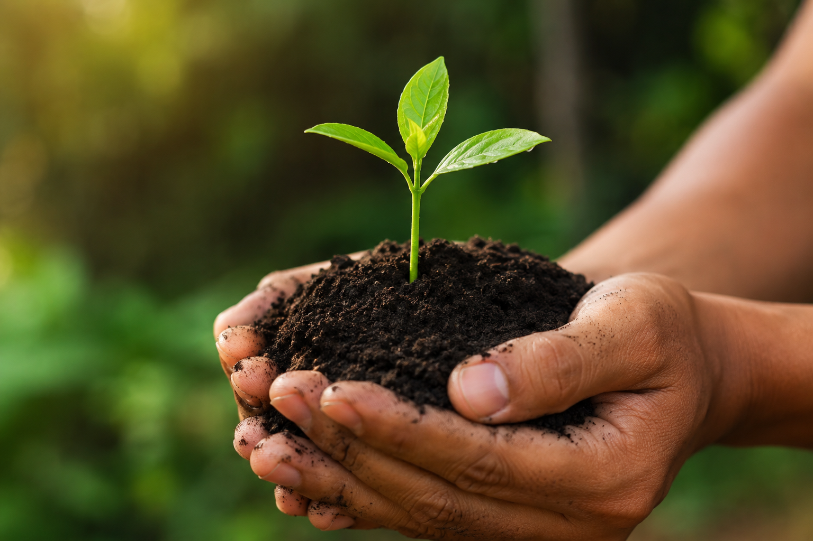

Tecnologia
Inteligência artificial espacial e drones automatizados mapeando a saúde da lavoura em tempo real.
O equilíbrio perfeito entre a alta produtividade tecnológica e a preservação ambiental rigorosa.
Inteligência artificial espacial e drones automatizados mapeando a saúde da lavoura em tempo real.

Sistemas integrados de plantio direto que regeneram microrganismos e fixam nitrogênio no solo.

Maximização do rendimento por hectare reduzindo a necessidade de abertura de novas áreas nativas.
Use os botões para navegar pelas tecnologias sustentáveis:
Responda às perguntas abaixo para calcular a eficiência ecológica da sua produção: